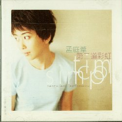
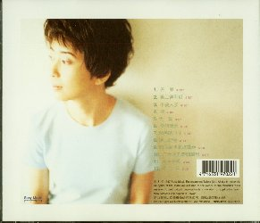

| 前のＣＤ | タイトル一覧 | 次のＣＤ |
| １９９７年３月 | 第二道彩虹－ YaYa another rainbow － | ＳＤＤ９７０２ |
|---|---|---|
|  | 新力音楽（Sony Music） | |
| ||
|  |
このアルバムは、一つ前の「心言手語」とイメージが大きく変わっています。 「心言手語」では、落ち着いた女性というイメージが強く出ていましたが、 今回の「第二道彩虹」では、なぜかボーイッシュです。 歌詞カードの写真は、見方によっては、「中谷美紀」さんにも似ているように 見えてしまいます。 私個人としては、「純真年代」や、「心言手語」の写真の方が好みです。 | |